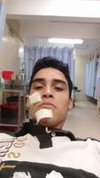
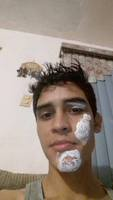
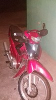
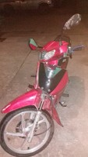
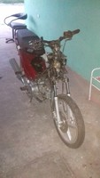
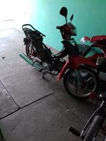
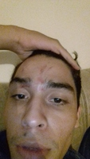

Pues desde niño era muy travieso no tengo fotos pero cuando tenía unos 8 años jugando a columpiarme en los sillones me resbale y me abrí la barbilla con una mesita de madera que estaba en medio de los sillones. Tiempo después cuando ya solo me quedaba la cicatriz inventamos un juego que se llamaba el tornado y pues consistía en agarrarte de un árbol mientras los demás te tomaban de los pies y te jalaban como si el viento estuviera soplando muy fuerte. Obviamente cuando ya no aguantabas gritabas y los demás te soltaban los pies. Una de las veces cuando me estaban jalando a mí no alcance a decir que me soltaran entonces caí y me volví a abrir la barbilla justo donde mismo, que buena regañada me dio mi mama. No siendo suficiente haberme abierto de nuevo la barbilla por segunda vez me la partí por tercera vez. En la primaria hacían carreras alrededor de la escuela y en una de las esquinas de la escuela había una piedra gigante, pues yo no me percate de ella y me tropecé terminando en el suelo.
Cuando estaba pequeño tenía una bicicleta y jugábamos carreras en ellas alrededor de la manzana de mi casa una de esas veces yo iba ganando y al dar la última vuelta por mi calle boom! un carro afortunadamente no venía muy recio y además alcanzo a frenar y yo solo termine arriba del cofre muy asustado pero sin ninguna lesión de gravedad.
Pero los accidentes no solo me han pasado de niño claro que no y menos cuando manejas una moto. En un día común que yo iba llegando al tec iba distraído en la callecita dentro de este y cuando volteo tenía muy cerca un carro justo en la curva pues al frenar muy de repente la llanta delantera derrapo y me fui de cara contra el suelo. Me levante como en shock no recuerdo aun bien que paso, pero si recuerdo que subí de nuevo a mi moto la deje donde siempre me ponía fui al baño me mire en el espejo y subí a mi salún en el segundo piso. Cuando me vieron lo que estaban dentro pensaban que era maquillaje por que era el día de clases después de halloween. Me preguntaban que si que me paso y yo solo respondía "no se" esto preocupo a todos y Willy un amigo me llevo en su carro a que me curaran.
Así termine en cruz roja para que me lavaran las heridas. Que ni siquiera me limpiaron bien ya que días después de eso encontré un pedazo del suelo en la raspada de la barbilla. Pensaran que no traía casco pero si traía solo que era tipo abierto y no me cubría el rostro de este tipo.

Mi mama me puso una pomada y que bueno porque gracias a eso hoy no me quedaron cicatrices. Pero me miraba un poco raro.
Otro accidente me paso cuando llevaba a mi papa a su trabajo y de repente un carro no me ve y da vuelta como si nada. Pues así termino mi pobre moto y nosotros en el suelo.
  Recuerdo que yo me quede sentado por un buen rato porque mi papa me aplasto con su cuerpo y me saco el aire fue horrible.
Después de cada accidente lo que seguía era desarmar toda la moto ver que se había rodo, repararlo, comprarlo o lo que se necesitara hacer. Mi mama numerosas veces me ha dicho que la venda pero hasta la fecha no lo eh hecho.
Pero no solo eh tenido accidentes de grande en moto. En el cumpleaños de una amiga nos pusimos a jugar como niños chiquitos a las escondidas unos ya borrachos pero yo no traía ni una gota de alcohol y aun así no mire un árbol cuando salí a contarme. Me pegue con el brazo de un árbol pero llegue a contarme.
